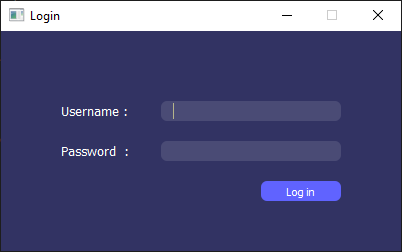
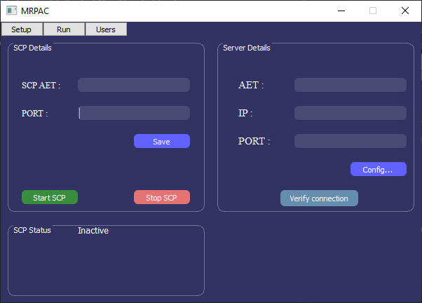
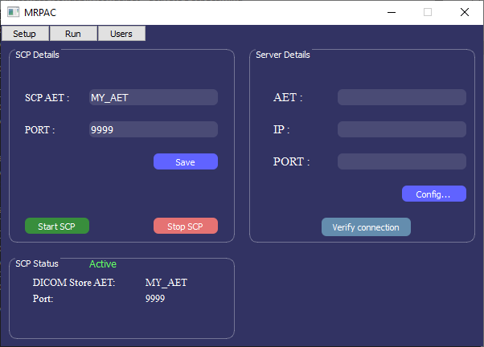
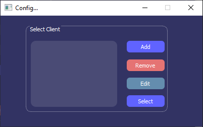
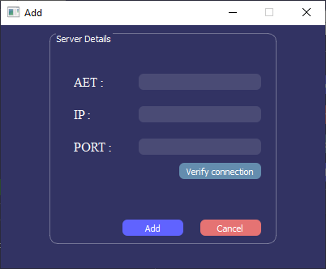

MRPAC
A desktop application program for autocontouring DICOM images sent over a DICOM Network.
MRPAC is written in python and it automatically contours DICOM images that are sent to it over a DICOM communication protocol. It converts the autocontour results as DICOM RT Structure Set and sends them to a pre-configured DICOM location.
Installation
To install MRPAC, I suggest you create a separate virtual environment first. Then simply clone the repository (or download the zip file) and run the following command in your terminal/command prompt:
pip install -r requirements.txt
You can also re-create the development environment from the mrpac_dev.yml file using the following commands:
conda env create -n mrpac_dev --file mrpac_dev.yml
If you would like to use our models that were trained on MR images of the pelvis from a 0.35T scanner, you can download them from here. You must create a directory called models and copy all the models into that directory. The details about the models can be found here. If you have your own models that you would like to use, follow the instruction below.
Starting MRPAC
In order to start the program, you simply run the MRPAC.py file in the src directory as follows:
cd src
python MRPAC.py
Configuration
When you run the progrom, you will be prompted to login. The default username and password are Admin and mrpac respectively (The feature to add or modify users is not implemented yet).

After you successfully login, you will see the Setup window which should look like the following:

In the SCP Details section, you can type in the AE title you would like to use for this program. (Make sure it complies with the DICOM standard as specified here). You alse need to choose a port number (choose a port above 1024 that is not being used by other programs). You can save your AE title and port number so that the next time you run the program, it remembers. When you click on the Start SCP button, the server will be started and will start listening for DICOM communications with the specified AET and port number. Once active, the SCP Status will change to Active as shown below.

It does support a DICOM C-ECHO so you can try and verify that other DICOM applications are able to communicate with your program. Now your program is configured to accept DICOM images that are sent to it and generate the autocontours. To automatically send the DICOM RTStruct that is generated by this program to a DICOM location (such as a PACS), you need to add the information of the DICOM location in the Server Details section by clicking on the Config... button. This will take you to a new window which should look like this.

You can add multiple DICOM locations in here and they will be saved, however, you can only select one DICOM location to send the RTStruct files to. In order to add a DICOM location, you simply click on the Add button which will take you to the Add window.
.
You can add the details of the DICOM location in here and click on Verify connection to verify the connection by sending a DICOM C-ECHO message before adding it. Once you have successfully added as many DICOM locations as you like, you can select one of them where the RTStruct will be sent to.
Using your own models
If you have your own autocontouring models that you would like to use instead, you can modify Autocontour.py. You can follow a similar structure and implement the __init__ method and the run method. If you change the structure of the Autocontour class, you might have to modify MRPAC.py to make sure that it is being instantiated and run correctly in the handle_close function.
UID specification
The program uses the pydicom.uid.generate_uid function to generate the SeriesInstanceUID and the SOPInstanceUID for the new RTStruct object being created. More information on DICOM UIDs can be found here. By default, the program uses the pydicom root UID as a prefix saved in the uid_prefix.txt file in the resources directory. If you have your own unique UID prefix, you can update the uid_prefix.txt so the program can use it. If you delete the uid_prefix.txt file, for the prefix parameter of the generate_uid function, None will be passed and the function generates a UID using the uuid.uuid4() algorithm. You can also modify the RTstruct.py if you would like to use your own UID suffix generation method.
References
If you use our models, please cite our Medical Physics paper.
Abdulkadir, Y, Luximon, D, Morris, E, et al. Human factors in the clinical implementation of deep learning-based automated contouring of pelvic organs at risk for MRI-guided radiotherapy. Med Phys. 2023; 50: 5969–5977. https://doi.org/10.1002/mp.16676
Contacts
If you have any questions or suggestions, please contact me at YasinAAbdulkadir@gmail.com
Warning
This application is still under development.
Contents: